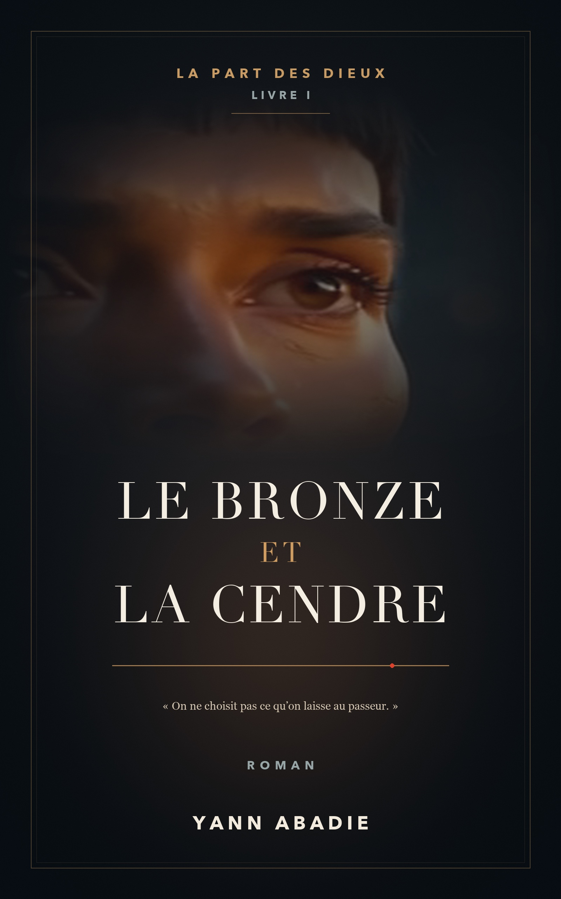

Hélène Vasseur a soixante-dix-neuf ans, deux prothèses de genou et un chat qu’elle confie à la voisine. Elle a creusé des montagnes toute sa vie. Ce matin de mars, elle redescend sous l’une d’elles pour mourir officiellement et se réveiller ailleurs, dans un corps de vingt-cinq ans à la peau couleur de cuivre et aux yeux d’ambre, avec sur l’avant-bras une ligne dorée qui compte les jours qu’il lui reste.
Édition directe : fichiers EPUB et PDF envoyés par e-mail après paiement.
15 secondes · Lecture avec le son à la demande.
SF mythologique · La Part des dieux, Livre I
« En 2287, on croyait les empires éteints. Il ne restait que le bronze… et la cendre. »
Images générées localement avec LTX 2.5 ; nouveau montage et typographie. Voix de titre synthétique Kyutai TTS : « Le Bronze et la Cendre. Un roman de Yann Abadie. »
Source de la voix française : CML-TTS, sélection cml-tts/fr de Kyutai tts-voices, voix 10087_11650_000028-0002, sous licence CC BY 4.0. Corpus CML-TTS. Audio mixé et encodé, sans changer la vitesse ni la hauteur.
La Légion d’Airain lui a promis les étoiles, une guerre propre contre des Gigantes sans visage, et la possibilité de revoir son fils, colon sur un monde lointain. Elle ne lui a pas dit que l’ichor qui coule dans ses veines a déjà un propriétaire. Ni que les dieux de l’ancienne Grèce n’étaient pas des légendes, mais des créanciers.
Tandis que la guerre s’étend de Pallène aux brumes de Phlégra, une chercheuse en fuite, un demi-dieu sans descendance et une femme d’État qui a signé trop de choses convergent vers Thèbes, la ville aux sept portes. Là-bas, il faudra choisir entre payer la dette et la voler.
Un space opera ample et sombre, une guerre vue par ceux qui ont déjà enterré tout le monde, une mythologie qui retrouve ses dents.
Le dernier matin, je me suis levée à cinq heures quarante, comme les autres matins, parce que mon corps ne savait pas que c’était le dernier. Les genoux savaient encore moins. Le gauche a craqué en touchant le carrelage, le droit a attendu la troisième marche de l’escalier pour se plaindre. Deux prothèses en titane posées en 2271 et en 2274, garanties vingt ans par la clinique de Bassens. Elles allaient mourir avec moi sous garantie. J’ai trouvé ça presque élégant.
Sur la table de la cuisine, il y avait le billet de la Réserve, Chambéry–Modane, valable ce jour seulement, sans retour. La Réserve ne fait pas payer le train à ceux qui vont mourir au bout de la ligne. C’est une délicatesse administrative. J’y suis sensible.
Ballast m’attendait dans la cuisine, assis sur le rebord de l’évier, à l’endroit exact où je lui interdis de s’asseoir depuis onze ans. C’est un chat gris de six kilos deux, dont un kilo de reproche. Je l’ai pesé la veille, avec le pèse-personne de la salle de bains : moi avec le chat, moi sans le chat, la différence. Je voulais que Mme Brunet ait le chiffre. On ne confie pas une charge sans indiquer sa masse.
Édition directe : fichiers EPUB et PDF envoyés par e-mail après paiement.